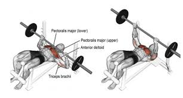
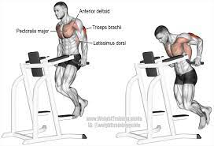

운동부위 리스트
운동목록

(벤치프레스)
:가슴의 근육을 전체적으로 키울 수 있는 운동
(덤벨 체스트 프레스)
:벤치 프레스의 자세가 어려운 사람이 벤치 대신 하기 좋은 운동
(인클라인 벤치프레스)
:가슴의 상단 근육을 키울 수 있는 운동
(인클라인 덤벨 체스트 프레스)
:인클라인의 바 무게를 컨트롤 하기 어려운 사람이 하면 좋은 운동

(딥스)
:가슴의 전체적 근육과 전반적 운동신경을 기를 수 있는운동